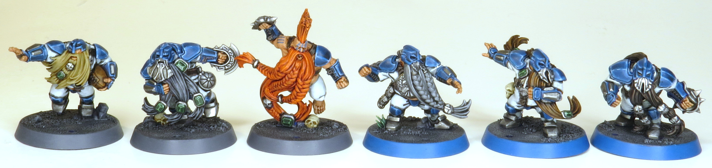
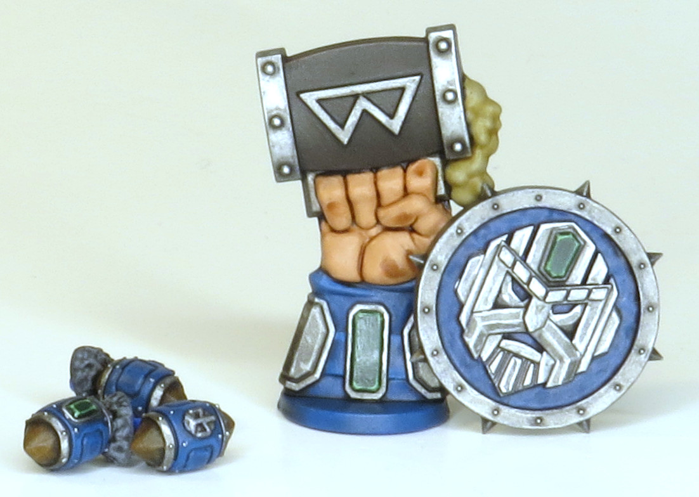
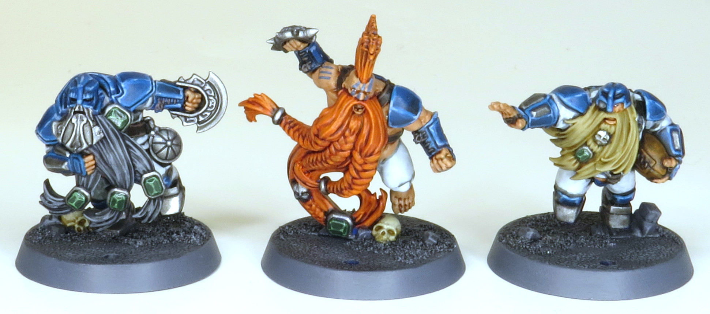
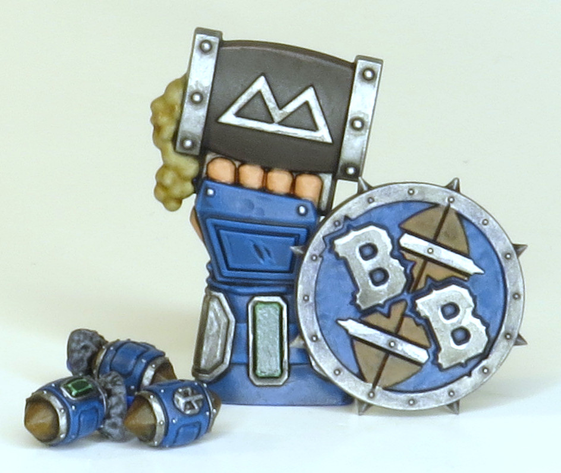
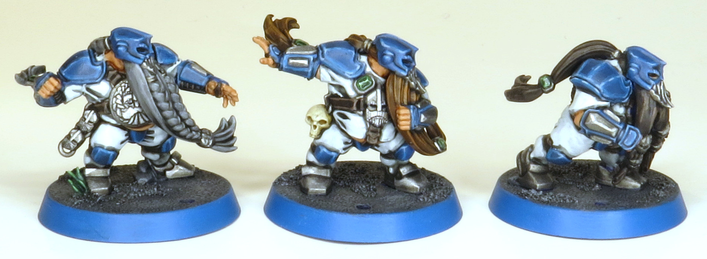

Like the human team, a little overboard on depth of colour, really proud of how shiny the armour looks though. Also pretty happy with the tattoos and beard colours, very fun to paint.





Paints Used:
Blue Armour: Thousand Suns Blue, Nuln Oil all over, glaze Thousand Suns Blue near edges, edge highlight Thousand Suns Blue, Ahriman Blue, Fenrisian Grey
Orange Hair: Wild Rider Red to make painting orange possible. Trollslayer Orange completely covering red, Carroburg Crimson all over, highlight Trollslayer Orange
Dark Grey Hair: Eshin Grey, Nuln Oil all over, highlight Eshin Grey and Dawnstone
Light Grey Hair: Dawnstone, Nuln Oil all over, highlight Dawnstone and Administratum Grey
Dark Brown Hair: Dryad Bark, Agrax Earthshade all over, highlight Dryad Bark and Gorthor Brown
Light Brown Hair: Mournfang Brown, Agrax Earthshade all over, highlight Mournfang Brown and Skrag Brown
Blonde Hair: Zandri Dust, Agrax Earthshade all over, highlight Zandri Dust and Ushabti Bone
Gems: Waaagh Flesh, Nuln Oil all over, highlight Warboss Green and Skarsnik Green